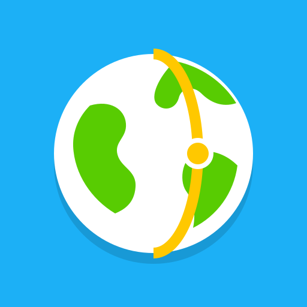

meridianPrivacy
Last updated 2026-10-24The short version
Meridian has no accounts, no ads and no analytics or tracking. We don't collect personal information.
What stays on your device
Your learning progress, streak, quiz scores and settings are saved in your browser or app storage on your own device. They are never sent to us. Clearing the app's data or using "Reset all progress" removes them.
Maps
The globe loads map images from Esri's map service (ArcGIS Online). As with any website, that service receives your device's IP address and the map area requested, under Esri's privacy policy. Fonts load from Google Fonts under Google's privacy policy. Without a connection, Meridian uses its own offline map.
Reporting an error
If you use "Report an error", your message opens as a public GitHub issue that you choose to submit, under GitHub's privacy statement. Don't include personal details you don't want public.
Meridian Plus
Deep dives are unlocked on your device. When they are sold in the app, payment is handled by Apple (or Google) under their terms; we never see your card or account details.
Children
Meridian is suitable for all ages and collects no data from anyone, including children.
Changes and contact
If this policy changes, the date above will change. Questions: use "Send feedback" in the app's Settings.